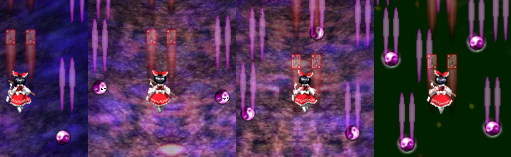
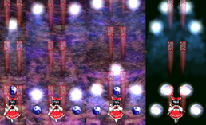
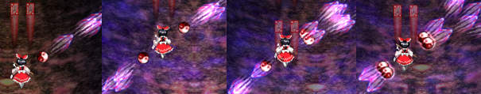
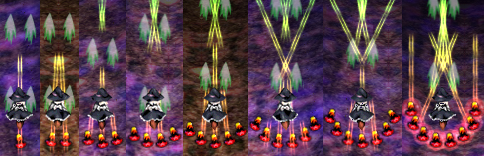
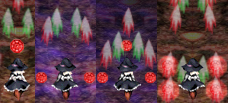
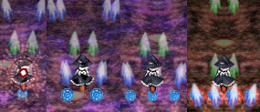
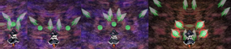
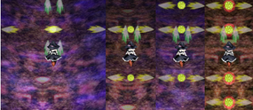
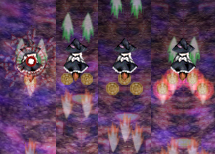
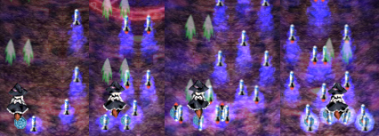

- Welcome to Touhou Wiki!
- Please register to edit. For assistance, check in with our Discord server or IRC channel.
Subterranean Animism/Gameplay
Gameplay[edit]
Controls[edit]
The game may be played using either a keyboard or a gamepad.
Keyboard controls are as follows:
- The Arrow Keys move the character around
- Z causes a short barrage of shots to be fired; it may be held down for rapid fire
- X releases a bomb, also known as a Spell Card or spiritual attack (presuming you have sufficient power)
- Shift slows the character's movement, and changes the nature of the character's shot and bomb; it generally makes your attacks more focused. Holding Shift will also increase the size of the character's item collection box. This makes it possible to snag items that are just out of reach or more effectively collect raining items.
- Ctrl fast-forwards through any dialogue and replays
- Home or P produces a .bmp screenshot in the /snapshot directory.
- F10 switches between fullscreen and windowed mode
- Esc pauses the game and brings you to the in-game menu
- Q returns you to the title screen when the game is paused
- R returns you to the beginning of stage 1 when the game is paused
Basic Gameplay[edit]
Subterranean Animism plays like a fairly typical vertically-scrolling danmaku shooting game, in which the player's character is always facing towards the top of the screen, shooting at anything that moves, avoiding and weaving between enemy bullets, and confronting difficult bosses at the end of a stage.
There are 4 levels of difficulty: Easy, Normal, Hard, and Lunatic. Each difficulty level features differences in the number of bullets fired by each enemy, rate of fire, variations in the bullets' pattern of movement, and the number and type of enemy Spell Cards used.
Shot[edit]
A character's "shot" is the player's primary method of attacking enemies. The shot's attack area and behavior varies depending on the character type the player has chosen.
Point of Collection[edit]
Like previous Touhou games, there is a line most of the way up the screen called the point of collection. Unlike the previous games though, it works slightly different, but the end result is the same. If you move your character at or above this line, your Communications Gauge is maxed which has the effect of drawing all items on the screen to your character. In the beginning of the first stage, the POC is clearly shown to the player. Like Mountain of Faith, you don't need to have full power or focus to use the POC - it's always available.
Options and Spiritual Attacks[edit]
Like Mountain of Faith, there is no separate bomb counter. Instead, there's a relationship between your power gauge, bombs, and options. Options are the small "satellites" that stick around your character and shoot shots. The more power items you collect, the higher your power gauge rises. The power gauge takes on values from 0 to 4 (or 8 for Marisa/Alice), and decimal numbers in between. The number of options you have corresponds to the integer part of your power gauge - e.g., if you have a power level of 2.75, you have two options. When you go into focused fire mode, your options change position, except with Marisa/Patchouli.
Each small power item is worth 0.05 power (or 0.08333... with Marisa/Alice). Each large power item is worth 1.00 power. A full power item (golden item with an "F") fills your power to the maximum.
Your power level must be at 1.00 or higher to use bombs. Whenever you use a bomb, your power gauge decreases by 1.00 - thus, you lose an option.
Lives[edit]
You start off the game with 2 lives. You can lose a life by getting "hit" by an enemy attack.
The hit box for your character is quite small in comparison to your on-screen sprite, approximately only 5 pixels by 5 pixels in size. If you hold Shift, a colored dot will appear, showing the hitbox precisely. If the hit box of your character's sprite comes into contact with the hit box of an enemy bullet, laser, or the enemy itself, then you have been hit.
In Subterranean Animism, the player's life stock is represented by stars. Bosses drop fractions of stars when a non-spell or spell card is beaten without dying (bombing is fine, but timing it out will not give one, unless the spell is a survival spell); if you collect five such fractions, you gain a life.
You can carry up to a maximum of 9 extra lives at a time. If you collect a life part when you already have 9 extra lives, that part will be lost.
When you lose a life, all the bullets on the screen are cleared, and you become invulnerable for a short period of time. You also lose all your power, but 7 power items are scattered for you to collect. The type of power item scattered depends on how much power you had before dying and how many lives you have remaining. (If you're on your last life, there will always be 1 full power item and 6 small power items. Otherwise, the number of large power items is equal to the integer part of your power before dying, except it will always be in the range 2 to 7 if you have at least three extra lives remaining, or 3 to 7 if you have one to two extra lives remaining.)
Stages[edit]
There are 6 stages in the full version of the game:
- Stage 1:「忘恩の地から吹く風」 The Wind Blowing From the Thankless Land
- Stage 2:「地上と過去を結ぶ深道」 The Deep Road Connecting the Past and the Above Ground World
- Stage 3:「忘れられた雪の旧都」 The Snowy Forgotten Ancient City
- Stage 4:「誰からも好かれない恐怖の目」 Those Terrifying Eyes Nobody Loves
- Stage 5:「昔時の業火」 Hell Fire of Times Past
- Stage 6:「荒々しい二つ目の太陽」 The Tempestuous Second Sun
- Extra Stage: 「地獄のラブリービジター」 The Lovely Visitor From Hell
Boss Battles[edit]
The main challenge and the main attraction. Each boss has multiple lives, which are represented by stars shown at the upper left of the screen. Bosses usually alternate between attacking normally and attacking with Spell Cards, switching once with each health bar. Colored sections on the health bar indicate the start of a Spell Card attack when the boss' health is depleted that far.
Normal attacks are incrementally stronger versions of the boss character's basic attack. Spell Card attacks bedazzle the player with combinations of complex patterns that often involve the use of projectiles and obstacles crafted especially for use with that Spell Card. If the player manages to defeat a Spell Card attack without getting hit or using any bombs, a substantial score bonus is rewarded for the feat.
Each attack is accompanied by a timer. When time runs out, the boss will switch to their next attack pattern even if their health bar isn't empty. Waiting for a boss character's attack pattern to self-destruct may be enough to beat them, but mere survival won't earn the player any score bonuses. (Note: There are some bosses that are invulnerable. For those bosses, you WILL get a score bonus if you survive the countdown to zero.)
When fighting a boss, a position marker shows up on the bottom margin of the screen, indicating where the boss is on the horizontal axis. Since your target can be completely obscured by bullets or darkness at times, use this marker to help you aim your shots. The marker will dim when the boss is being hit, and will flash red when her health bar gets sufficiently depleted.
Character Statistics[edit]
There are two characters to choose from, each of which have three styles of attack. The player decides which character to play and which attack type to use at the start of the game.
| Reimu with Yukari A violet-colored needle that flies straight forward.  |
Reimu with Suika High-power penetrating bullets that home a little.  |
| Reimu with Aya Fires in the same and opposite direction of your movement. Option position is fixed while in focus movement.  | |
| Marisa with Alice Concentrated during normal movement, spread-shot during focus fire.  |
Marisa with Patchouli Fire Sign - Forward Concentrated Formation  Water Sign - Forward Wide-spread Formation  Wood Sign - Oblique Angle Formation  Metal Sign - Left/Right Attack Formation  Earth Sign - Rear Attack Formation  |
| Marisa with Nitori Fires a strong, high-precision missile.  | |
Screen Layout[edit]
- Your character
- Player Score
- High Score: your highest score for the current character, type, and difficulty
- Score: your current score
- Player Status
- The number of remaining lives / The approximate location of the point of collection
- Power: your shot power level, maxing out at 4.00 (8.00 for MarisaA)
- Graze: the number of enemy shots that have grazed your hitbox during the game
- Enemy Status
- Left bar(s): the number of health bars the enemy has left. White bars indicate the boss will use regular attacks, red bars indicate the boss will use a spell card.
- Right number: the amount of time left before the enemy's attack spell fails (self-destructs)
- Communication gauge
- Spell Card Status
- Title: the name of the Spell Card being used
- Bonus: the constantly-updating value of the Spell Card Bonus
- History: the number of times you have "collected" the Spell Card currently being used, and the number of times you have faced it.
Endings[edit]
The endings depend solely upon the use of continues.
- Bad Endings: endings 7-12 are reached if one or more continues are used.
- Normal Endings: endings 1-6 are achieved if continues are not used.
Unlockable Features[edit]
- Level Practice: This feature allows a team to practice a level that they have already beaten. You begin with 9 lives and full power. If you lose all your lives, you can't continue.
- Extra Stage: By beating the game on Normal difficulty or higher with a team, the Extra Stage is unlocked for said team.
Scoring[edit]
Enemies[edit]
Any damage you deal to any enemy, whether it be caused by your shots or your bombs, will cause your score to increase very slightly. Actually destroying enemies will award you slightly more points, but the points earned from this are around the range of hundreds to thousands of points per enemy. This is not a significant amount at all. However, destroyed enemies release items for you to collect, and those are very important for scoring as covered below.
Point Items[edit]
As its name implies, point items are the major source of points in the game. Unlike previous Touhou games they are worth more points not depending on how high you are on the screen, but depending on how high your Communications Gauge is. The higher the Communications Gauge, the more points they are worth, up to a defined maximum. You can easily tell when you are collecting point items for their maximum value, since they show the value in yellow text.
Overall point item value is calculated by a base value shown in the lower-left corner multiplied by a second value shown to the right of the first. The first one is limited and starts at a fixed value. It is increased by collecting special point items (100 for large, and 10 for small special point items), but is reset to its starting value upon death. If no losses have occured, the game stops the counter after a certain value has been reached.
The second value (shown to the right) acts as a multiplier for the first, starting from 0.00. When it is at 0.00, the point items are not worth 0 but a minimum of 10 points. The multiplier can be increased both temporary and permanently (see below) by grazing large amounts of bullets.
| Difficulty | Start value | Maximum value |
|---|---|---|
| Easy | 25,000 | 50,000 |
| Normal | 50,000 | 100,000 |
| Hard | 100,000 | 200,000 |
| Lunatic | 200,000 | 400,000 |
| Extra | 200,000 | 400,000 |
Power Items[edit]
Power items increase your power gauge. Small items give you a 0.05 power boost(or 0.083 for Marisa/Alice), while large items give you a 1.0 power boost. The maximum value is 4.0 (or 8.0 for Marisa/Alice). If you're already at full power, you will instead get small special point items.
Special Point Items[edit]
Special point items are the green star point items. (They look the same as Mountain of Faith's Faith Point items.) They slightly increase the value of point items.
Communication Gauge[edit]
The gauge in the lower-left corner reflects the strength of the communication channel between the player character and the youkai assisting them from above ground. It has a variable value of 0.00 minimum and 1.00 maximum which is added to the 2nd value (the multiplier) in the point item value, thus providing a range of point items' worth depending on how the player collects them.
It increases when you graze bullets; each graze adds 8% to the gauge. However, it decreases at a rate of 18% per second when below the POC, so you need to graze a lot of bullets in a small timeframe if you want to see a significant increase. To maintain the gauge level, you must graze at least 2.25 bullets per second. Keep this in mind, because certain parts of the game (for instance, the first half of stage 5 and the second half of stage 2) have long stretches without conveniently graze-able bullet patterns aimed at the character, making it very hard to build up a new chain without having to go over the point of collection or undergoing other avoidable risks.
At maximum value it has the effect of autocollecting items wherever your character is on the screen. Additionally, grazing bullets while the gauge is full adds time to a grace period before the gauge starts dropping, at the same conversion rate of 2.25 bullets = 1 second. The grace period timer maxes out at 100 frames (1⅔ seconds). Moving above the POC also immediately maxes out the gauge. (Note: If the gauge was below 50% prior to reaching the POC, it increases by 50% on the first frame, then it gets set to 100% on the second frame.) Staying above the POC slowly adds time to the same grace period timer at a rate of 0.3x, i.e. for every second you stay above the POC, you gain 0.3 seconds on the timer.
Graze Counter[edit]
This counter, making a return from the Touhou games before Mountain of Faith, counts how many bullets have come dangerously close to your hitbox. Starting at 0, it affects the 2nd value (multiplier) in the point item value, increasing it by 0.01 per 100 points of graze, to a maximum of 8.99 at 89,900 graze. This accumulation is permanent, unlike with the base value.
Most bullets can only be grazed once, but lasers and certain types of bullets (such as Orin's ghost wheels and Utsuho's suns) can be continuously grazed as long as you are close to them. This rate of repeated grazing is around 15 times per second, much higher than in previous games. Additionally, unlike previous games, grazing is possible while invincible during a bomb or a death.
The communication gauge effects still apply regardless of the accumulated graze points: it is always possible to increase the multiplier further by 1.00 by grazing bullets, and you don't receive free autocollection by grazing 10,000 bullets (thus reaching a minimum of 1.00).
Spell Card Bonus[edit]
Sometimes, a boss will attack using a Spell Card. You will know this is happening when the background changes and the Spell Card's name appears in the upper right corner of the screen. If the boss's healthbar is depleted within the time limit and without getting hit or using a bomb, the Spell Card bonus will be added to your score.
The bonus starts at out at a value equal to:
1 million * (stage number + difficulty value)
with difficulty value being:
| Easy | 0 |
| Normal | 1 |
| Hard | 2 |
| Lunatic | 3 |
Bonuses in Extra have a starting value of 11,000,000.
Except for a few of Koishi Komeiji's Spell Cards (the survival cards and Subconscious "Rorschach in Danmaku"), the bonus decreases over time, starting 5 seconds after the spell card starts. The bonus decreases at a constant rate of:
0.9*(starting value)/(time limit in seconds - 5) per second
If the bonus does not decrease, it will be awarded if the spell is timed out without dying or bombing. (This occurs even for "Rorschach in Danmaku", which is not a survival card; however, the life part will still be lost if it is timed out.)
Clear Bonus[edit]
A clear bonus is added to the score at the end of each stage. The bonus is based on the stage number and the lives remaining at the end of that stage regardless of the difficulty. It is calculated as follows:
(1 million * stage number) + (1 million * lives in stock)
For both stage 6 and the extra stage the clear bonus is increased by:
Easy: (lives in stock * 20 million) + (power * 2 million) Normal: (lives in stock * 25 million) + (power * 3 million) Hard: (lives in stock * 35 million) + (power * 4 million) Lunatic: (lives in stock * 40 million) + (power * 6 million) Extra: (lives in stock * 40 million) + (power * 8 million)
For Marisa A you have to divide power by 2.
You also receive a silent bonus:
(1,000 * accumulated point value).
Bugs[edit]
- In the demo v0.01, it was possible to take your character out of the screen by going diagonally down on either corner of the screen. You could keep your character's hit box below the bottom edge of the screen, but your options above, letting you attack while grazing most bullets directed at you with no chance of being hit.
- For the full version (C74 release), you can attack Sanae during her entrance in Extra game by using bombs at the right time. Simply go to the spot where she'll appear, use a bomb (eg. Reimu C, or Marisa B) about a second before she appears, and watch her go "poof", skipping a battle. The same could be done with Orin in stage 6, as well as Yuugi, the Stage 3 boss, as the Spell Card that she uses before simply sniping at you, invincible, ends.
- The replay desynchronization bug from Mountain of Faith still exists. It occurs in full-game replays on Utsuho's first non-spell when the replay is started from stage 6. Starting playback from an earlier stage can prevent this, provided no fast-forwarding is done in between stage 5 being cleared and stage 6 starting.
- If you complete the game on Easy after unlocking the Extra stage, a bug will re-lock Extra mode until you complete the game on Normal or higher again.
- When using Marisa C (with Nitori) it is possible to reverse bomb at the exact moment that will allow you to not only live but keep up your kappa shield.
- Spell Cards 33 and 34 have a time limit of 43 seconds, but their Spell Card Bonuses drain as if the time limit were only 35 seconds. As a result, the bonus will reach 0 at 4.66 seconds left on the clock and start ticking into the negative numbers. If the bonus is awarded after this occurs, the negative value is subtracted from the player's score.
- If you take at least 100 seconds of actual time on a spell, the game will display your actual time as 999.99s. This does not occur with clear time.